用一句话说出一个生命过程，Claude 会画出做这件事的标本。Name a living process in one line, and Claude draws the specimen that does it.
Anatomy 的信条是 “物体本身就是解释”——不画方框、箭头和浮动标签，而是发明一台真实的机器，让它的运动本身就是概念。它画的是机器：锁、绘图仪、抽屉柜。
Anatomy Vita 把这条信条推进到生命。分子本来就是机器，照原样画；细胞、组织、器官则改用标本、教学模型和记录仪器的语言来画。为此它在 Anatomy 之上加了一层 bio 层，并立了七条新法则。kit 本身一行未改。
Anatomy's creed is “the object is the explanation” — no boxes, arrows or floating labels; invent a real machine whose motion is the concept. It draws machines: locks, plotters, chests of drawers.
Anatomy Vita carries that creed into life. Molecules really are machines, so they are drawn as such; cells, tissues and organs are drawn in the language of specimens, teaching models and recording instruments. To do that it adds a bio layer on top of Anatomy and seven new laws. The kit itself is untouched.
Vita 新增了什么What Vita adds
01扩充Extensions
- 题材：从机械到生命。原 Anatomy 画的是机器。Vita 把同一条信条推进到分子 → 细胞 → 组织 → 器官 → 系统 → 星球，规划 22 张图，已上线 8 张。Subject: from machines to life. Anatomy draws machines. Vita carries the same creed through molecule → cell → tissue → organ → system → planet: 22 figures planned, 8 live.
- bio 层，kit 零修改。所有扩展都在
bio/bio.mjs；kit/与scripts/原样复用，随时可以和上游同步。A bio layer, kit untouched. Every extension lives inbio/bio.mjs;kit/andscripts/are reused verbatim, so upstream can be merged at any time. - 染色系统。13 种真实染料 / 荧光蛋白（DAPI、GFP、RFP、伊红、苏木精、ATP、髓鞘、氧合/脱氧血、Na⁺、K⁺、tRNA、胞质）。
color-mix把四朝向色调推向染料色，明暗保留，图例色块直接引用染料名。A stain system. 13 real dyes and fluorescent proteins (DAPI, GFP, RFP, eosin, haematoxylin, ATP, myelin, oxy/deoxy blood, Na⁺, K⁺, tRNA, cytosol).color-mixpushes the four facing tones toward the dye, keeping the shading; legend swatches name the dye directly. - 看得进去的膜。
shellOf：前后两半的半透明膜壳，先画后半、再画内容、最后画前半，加高光——原 kit 只有不透明实心体。Membranes you can see into.shellOf: a translucent shell in two halves — back half, contents, front half with a gleam. The original kit only has opaque solids. - 标本语法。
plinth/standRod：带校准刻度尺、铭牌、螺丝的底座与支架杆。细胞以上的对象像实验室里那样放在玻片、支架、教学模型上，而不是硬套机器隐喻。Specimen grammar.plinth/standRod: bases with a calibrated scale, name plate and screws, plus stand rods. Above the cell, things sit on slides, stands and teaching-model bases as they would in a lab, instead of being forced into a machine metaphor. - 种子化变异。
rng(seed)：没有两个细胞一样，但每次构建都一样——生物的不规则性与可复现的构建同时成立。Seeded variation.rng(seed): no two cells alike, yet every build identical — biological irregularity and reproducible output at once. - 几何在浏览器里活着。
liveScript()把 iso-kit / lathe / tube 内联为页面里的 K / G / T，几何可逐帧重建，于是能表达生长、形变和拓扑变化（一个细胞的截面并集轮廓变成两个）。Geometry alive in the browser.liveScript()inlines iso-kit / lathe / tube as K / G / T inside the page, so geometry can be rebuilt every frame — growth, deformation, even topology change (one cell's cross-section union becoming two). - 深度收集器。
scene(P)：粒子、管段、零件带深度放进来，svg()一次从后往前画，让成百个离子和管段正确遮挡。A depth collector.scene(P): particles, tube pieces and parts go in with their depth;svg()paints back to front once, so hundreds of ions and tube segments occlude correctly. - 七条生命法则。标尺即真相、染色代替配色、时间承认被改写、粒子守恒、拓扑可以变、标本而非卡通、隐喻需要声明——在原绘图语法之上新增的生命专用规则。Seven laws of life. Scale is truth, stains not palettes, admit the time warp, conserve particles, let topology change, specimens not cartoons, declare metaphors — rules for living things on top of the original drawing grammar.
改进Improvements
- 统一运行时。
vitaLoop()：每张图同样的离屏暂停、闲置巡演、指针 / 点击 / 键盘、减少动态时静止，不再每张图各写一遍循环。One shared runtime.vitaLoop(): every figure pauses offscreen, tours when idle, answers pointer / click / keys and stands still under reduced motion the same way — no per-figure loop code. - 时间缩放写在读数里。µs 到小时的过程都在读数里标明“放慢 N×”或“加速 N×”，不再假装是实时。Time scaling in the readout. Processes from µs to hours state “slowed N×” or “sped up N×” in the readout instead of pretending to be real time.
- 守恒可验证。钠钾泵里 Na⁺、K⁺ 各 25 个，泵、漏、阻断全程守恒；乌本苷阻断后梯度消散已用 Playwright 驱动验证（Na⁺in 2→12、K⁺in 20→13）。Conservation you can check. The pump keeps 25 Na⁺ and 25 K⁺ through pumping, leaking and blocking; the gradient collapse after ouabain was verified by driving the page with Playwright (Na⁺in 2→12, K⁺in 20→13).
- 真实数据驱动。核糖体读的是真实 GFP 基因（238 aa + UAA）；驱动蛋白按 v(F) = 800·(1−(F/6.2)^1.4) nm/s；钠钾泵走 Post–Albers 六态；线粒体按 state 3 / state 4 耗氧比。Driven by real data. The ribosome reads the real GFP gene (238 aa + UAA); kinesin follows v(F) = 800·(1−(F/6.2)^1.4) nm/s; the pump steps through the six Post–Albers states; the mitochondrion uses measured state 3 / state 4 ratios.
- 事实栏。每页卡片下有一行真实数值（尺寸、速率、电位、能耗），与图中读数出自同一模型。A facts strip. Every page ends with a row of true numbers (size, rate, potential, energy cost) from the same model that drives the readout.
- 可嵌入的长文站点。
vitaPage()页面外壳 +?embed/#embed嵌入模式：同一页面既能全屏打开，也能嵌进首页长文；首页带尺度标尺、路线表和工具层说明。An essay site with embeds.vitaPage()shell plus?embed/#embed: each page opens full screen or sits inside the essay; the home page adds a scale ruler, roadmap and toolkit notes. - 双语（v3）。站点外壳、首页长文、各页副标题与事实栏都有中英两版；默认英文，中文浏览器自动显示中文；导航里可切换，记住选择，嵌入的图同步切换；也可用
?lang=en/?lang=zh直接指定。Bilingual (v3). Shell, essay, page subtitles and facts strips exist in English and Chinese; English by default, Chinese for Chinese-language browsers; switch in the nav, the choice is remembered and embedded figures follow;?lang=en/?lang=zhpick one directly. - 一键部署（v3）。
wrangler deploy把site/作为静态资源发布到 Cloudflare Workers。One-command deploy (v3).wrangler deploypublishessite/as static assets on Cloudflare Workers.
生命法则Laws of life
02每条法则都由 bio 层里一个具体的调用来执行，所以它不是口号，是代码。下图是这层关系的 UML 类图：bio 层继承 Anatomy，并实现七个「法则」接口。
Each law is enforced by a specific call in the bio layer, so it is code, not a slogan. The UML class diagram below shows the relationship: the bio layer extends Anatomy and realizes seven «law» interfaces.
- 标尺即真相。每张图的底座上都有一把校准过的刻度尺，标出真实尺寸。
plinth({ scale })Scale is truth. Every base carries a calibrated ruler marked in real units.plinth({ scale }) - 染色代替配色。颜色只来自真实的染料或荧光蛋白：DNA 是 DAPI 蓝，神经元是 GFP 绿，质子是 RFP 红。
stain(name, svg)Stains, not palettes. Colour comes only from real dyes or fluorescent proteins: DNA is DAPI blue, neurons GFP green, protons RFP red.stain(name, svg) - 承认时间被改写。动作电位以 µs 计、细胞分裂以小时计；读数永远写明“放慢 2000×”。
vitaSay("slowed N×")Admit the time warp. Action potentials take µs, cell division takes hours; the readout always says “slowed 2000×”.vitaSay("slowed N×") - 粒子守恒。质子、离子、dNTP 做布朗运动，但数量可数且守恒。
scene(P).put(ion)Conserve particles. Protons, ions and dNTPs jiggle, but they are countable and conserved.scene(P).put(ion) - 拓扑可以变。一个细胞真的变成两个：膜轮廓是截面并集，而非两个圆叠在一起。
liveScript() · unionTopology may change. One cell really becomes two: the membrane is a union of cross-sections, not two overlapping circles.liveScript() · union - 标本，而非卡通。细胞以上的对象放在玻片、盖玻片、支架或教学模型底座上，像实验室里真实摆放的那样。
plinth · standRod · shellOfSpecimens, not cartoons. Anything above a cell sits on a slide, coverslip, stand or teaching-model base, as it would in a lab.plinth · standRod · shellOf - 隐喻需要声明。只有无实体的过程（分化景观、反馈）才发明机器，并在图注里说明这是隐喻。
caption: "metaphor"Declare metaphors. Only processes with no body (fate landscapes, feedback) get an invented machine, and the caption says so.caption: "metaphor"
图集Gallery
03第 1–4 批与第 5 批的 17–19，从 2 nm 到 1.7 m。点一张图跳到它的详解，那里有可交互的完整图。
Batches 1–4 plus 17–19 from batch 5, from 2 nm to 1.7 m. Click a figure to jump to its section, where the full interactive figure lives.
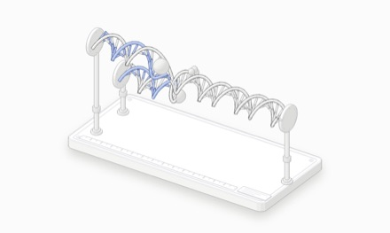
Fig. 01 · 2 nmDNA 复制叉DNA replication fork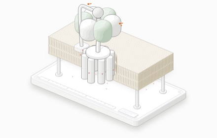
Fig. 02 · 10 nmATP 合酶ATP synthase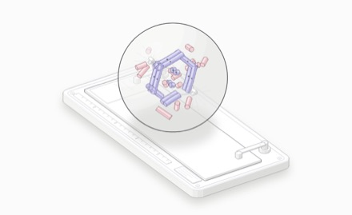
Fig. 03 · 20 µm有丝分裂Mitosis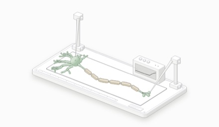
Fig. 04 · 1 mm神经元动作电位Action potential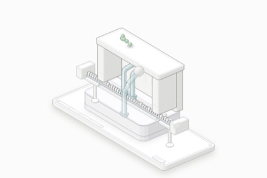
Fig. 05 · 25 nm核糖体翻译Ribosome translation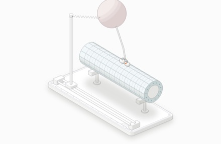
Fig. 06 · 8 nm驱动蛋白行走Kinesin walking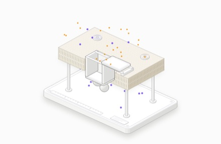
Fig. 07 · 10 nm钠钾泵与细胞膜Na⁺/K⁺ pump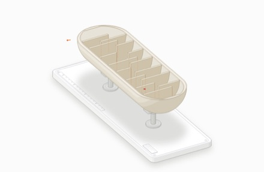
Fig. 08 · 1 µm线粒体全貌Mitochondrion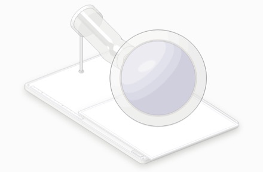
Fig. 09 · 100 µm卵裂与囊胚Cleavage → blastocyst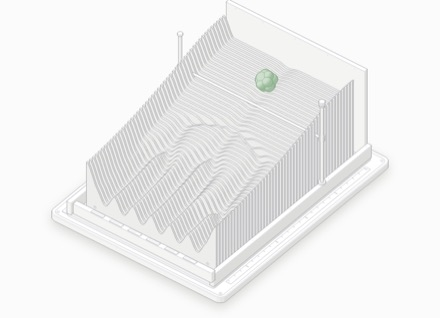
Fig. 10 · day 5–28细胞分化 · Waddington 景观Differentiation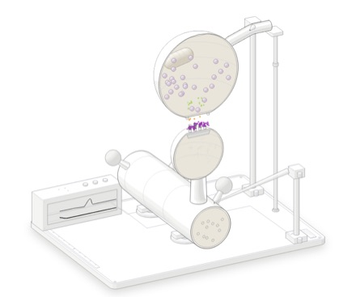
Fig. 11 · 1 µm突触传递Synapse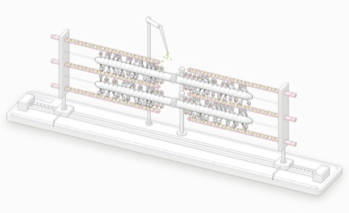
Fig. 12 · 2.5 µm肌节收缩Sarcomere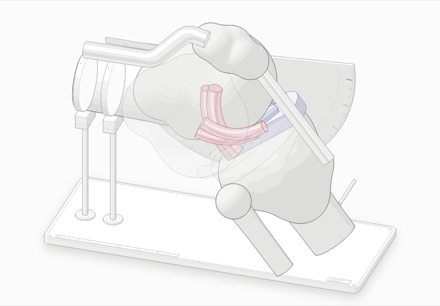
Fig. 13 · 10 cm膝关节Knee joint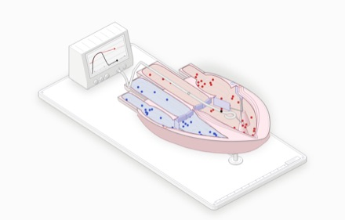
Fig. 14 · 12 cm心脏Heart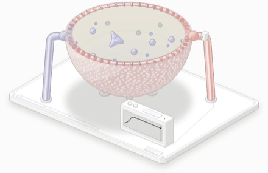
Fig. 15 · 200 µm肺泡与呼吸Alveolus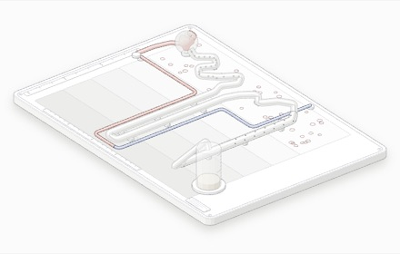
Fig. 16 · 4 cm肾单位Nephron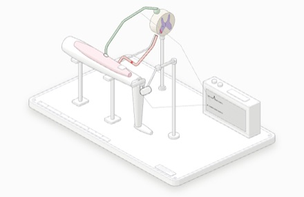
Fig. 17 · 1 m反射弧 / 膝跳反射Reflex arc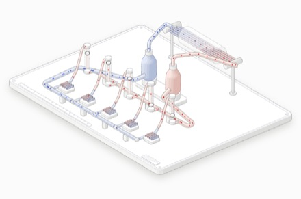
Fig. 18 · 1.7 m循环系统Circulation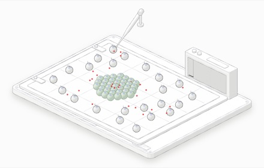
Fig. 19 · 10 µm免疫应答Immune response逐图详解Figures
04悬停、点击或键盘都能驱动；离开视口自动暂停，系统设置“减少动态”时停在关键帧。图内卡片文字为英文。
Drive them by hover, click or keyboard; they pause offscreen and hold a key frame under reduced motion.
Fig. 01 · DNA 复制叉Fig. 01 · DNA replication fork
2 nm三根支架上的双螺旋拉链机：解旋酶环剥开、两台聚合酶跟进、后随链留下冈崎缺口
A double-helix zipper on three stands: the helicase ring splits it, two polymerases follow, the lagging strand leaves Okazaki gaps
Fig. 02 · ATP 合酶Fig. 02 · ATP synthase
10 nm膜片上的水车：质子驱动 c8 转子，γ 轴每转 120° 压出一个 ATP；拉低 Δp 到 ~145 mV 以下会反转
A water wheel in a membrane patch: protons turn the c8 rotor, every 120° of the γ shaft presses out one ATP; drop Δp below ~145 mV and it runs backwards
Fig. 03 · 有丝分裂Fig. 03 · Mitosis
20 µm玻片上的一个细胞：从 G2 到胞质分裂，一个细胞真正拓扑地变成两个
One cell on a slide, from G2 to cytokinesis — one cell topologically becomes two
Fig. 04 · 神经元动作电位Fig. 04 · Action potential
1 mm盖玻片上的 GFP 神经元 + 记录放大器：跳跃传导 40 m/s 对比无髓鞘 2 m/s
A GFP neuron on a coverslip with a recording amplifier: saltatory conduction at 40 m/s vs 2 m/s unmyelinated
Fig. 05 · 核糖体翻译Fig. 05 · Ribosome translation
25 nm读带机：mRNA 磁带三个一读（真实 GFP 基因），齿高编码嘌呤/嘧啶，错配 tRNA 被弹回，肽链从出口隧道吐出
A tape reader: the mRNA tape (the real GFP gene) is read three at a time, tooth height encodes purine/pyrimidine, mismatched tRNAs bounce off, the peptide leaves through the exit tunnel
Fig. 06 · 驱动蛋白行走Fig. 06 · Kinesin walking
8 nm微管轨道上的双足步行器 + 导轨上的力钳弹簧：每步 8 nm、每步一个 ATP，~6 pN 失速
A two-legged walker on a microtubule track pulling a force-clamp spring: 8 nm and one ATP per step, stalls near 6 pN
Fig. 07 · 钠钾泵与细胞膜Fig. 07 · Na⁺/K⁺ pump
10 nm双门气闸：3 Na⁺ 出、2 K⁺ 进，离子守恒可数；漏通道 + 乌本苷开关，阻断后梯度消散
A two-door airlock: 3 Na⁺ out, 2 K⁺ in, every ion conserved and countable; leak channels plus an ouabain switch — block it and the gradient runs down
Fig. 08 · 线粒体全貌Fig. 08 · Mitochondrion
1 µm纵剖的线粒体教学模型：双层膜切面、15 片板状嵴、嵴缘的 ATP 合酶排；ADP 需求驱动 state 4 → state 3
A mitochondrion teaching model cut lengthwise: double-membrane section, 15 lamellar cristae, ATP synthase rows on their rims; ADP demand drives state 4 → state 3
Fig. 09 · 卵裂与囊胚Fig. 09 · Cleavage → blastocyst
100 µm握持针下透明带里的人类胚胎：1→2→4→8→致密化桑椹胚→囊胚（近半切开）；体积守恒，分裂逐渐不同步
A human embryo in its zona on a holding pipette: 1→2→4→8→compacted morula→blastocyst (half cut away); volume is conserved and divisions drift out of step
Fig. 10 · 细胞分化 · Waddington 景观Fig. 10 · Differentiation
day 5–28声明的隐喻：层板拼成的沃丁顿地形板，12 个 Oct4-GFP 细胞越过闸门滚进 6 条命运山谷（神经元、皮肤、血液、心肌、肠、肝）
A declared metaphor: Waddington's landscape as a sliced plywood board; 12 Oct4-GFP cells pass a gate and roll into six fate valleys (neuron, skin, blood, heart, gut, liver)
Fig. 11 · 突触传递Fig. 11 · Synapse
1 µm剖开的海马突触 + 刺激/记录双电极：Ca²⁺ 进入、囊泡按 [Ca²⁺]⁴ 概率融合、谷氨酸跨过间隙打开 AMPA，EPSP 上升；低钙时出现失败
A cut-open hippocampal synapse with stimulating and recording pipettes: Ca²⁺ enters, vesicles fuse with probability ∝ [Ca²⁺]⁴, glutamate crosses the cleft and opens AMPA receptors, the EPSP rises; at low calcium it fails
Fig. 12 · 肌节收缩Fig. 12 · Sarcomere
2.5 µm滑尺式肌节：Z 盘装在带弹簧的滑车上，128 个肌球蛋白头按 Ca²⁺ 结合、划桨、脱离；肌节从 2.50 缩到约 2.1 µm
A slide-rule sarcomere: Z discs on sprung carriages, 128 myosin heads binding, stroking and letting go as Ca²⁺ arrives; the sarcomere shortens from 2.50 to about 2.1 µm
Fig. 13 · 膝关节Fig. 13 · Knee joint
10 cm教学骨骼模型 + 量角器：交叉四连杆的 ACL/PCL 自然产生股骨后滚；各束随角度绷紧或松弛；可切换 ACL / PCL 断裂
A teaching skeleton with a goniometer: the cruciates as a crossed four-bar produce the femur's roll-back; each bundle goes taut or slack with angle; switch to a torn ACL or PCL
Fig. 14 · 心脏Fig. 14 · Heart
12 cm冠状面剖开的四腔教学模型 + 双传感器导管与监护仪：一个弹性腔-Windkessel 模型驱动瓣膜开合、房室平面下移、血流点计数（1 点 = 5 mL）和 Wiggers 压力曲线
A four-chamber teaching model cut in the frontal plane, with a dual-sensor catheter and a monitor: one elastance–Windkessel model drives the valves, the descending AV plane, counted blood (1 dot = 5 mL) and a Wiggers pressure trace
Fig. 15 · 肺泡与呼吸Fig. 15 · Alveolus
200 µm赤道剖开的人肺泡模型 + 血氧仪：红细胞沿毛细血管排队通过，按 Hill 曲线从 deoxy 染成 oxy；运动缩短通过时间，纤维化加厚屏障，出口血氧下降
A human alveolus cut at its equator with an oximeter: red cells file through the capillary and turn from deoxy to oxy along the Hill curve; exercise shortens transit, fibrosis thickens the barrier and the outflow desaturates
Fig. 16 · 肾单位Fig. 16 · Nephron
4 cm玻璃管路的肾单位教学板：每个点是 1% 的滤液，在真实的重吸收部位离开；ADH 决定集合管放回多少水，量筒按真实尿量注满
A nephron in glass tubing on a cortex/medulla board: each dot is 1% of the filtrate and leaves where water is really reabsorbed; ADH sets how much the collecting duct takes back, and a cylinder fills at the true urine flow
Fig. 17 · 反射弧 / 膝跳反射Fig. 17 · Reflex arc
1 m膝跳反射教学台：叩诊锤敲髌腱，GFP 感觉纤维把冲动送进脊髓切片，一个突触后经 RFP 运动纤维返回；示波器显示 ~25 ms 后的肌电
A knee-jerk rig: a hammer taps the tendon, a GFP sensory cable carries the volley into a cord slice, one synapse, and an RFP motor cable brings it back; the scope shows the EMG ~25 ms after the tap
Fig. 18 · 循环系统Fig. 18 · Circulation
1.7 m模拟循环台：两个泵球代表左右心，玻璃肺歧管与五条并联器官床，各带转子流量计；运动时心输出量 5 → 17.5 L/min 并重新分配
A mock circulatory loop: twin pumps for the right and left heart, a glass lung manifold and five parallel beds with rotameters; exercise raises output from 5 to 17.5 L/min and re-divides it
Fig. 19 · 免疫应答Fig. 19 · Immune response
10 µm盖玻片上的克隆选择：抗原只挑中钥匙匹配的那个 B 细胞，它分裂成克隆、变成浆细胞分泌抗体；第 21 天再次接种，二次应答更快更高
Clonal selection on a coverslip: the antigen picks the one B cell whose key fits, which divides into a clone of plasma cells shedding antibody; a second dose on day 21 brings a faster, higher response
路线图Roadmap
05| # | 主题Subject | 尺度Scale | 发明的物体The invented object | 状态Status |
|---|---|---|---|---|
| 01 | DNA 复制叉DNA replication forkDNA replication forkDNA 复制叉 | 2 nm | 三根支架上的双螺旋拉链机：解旋酶环剥开、两台聚合酶跟进、后随链留下冈崎缺口A double-helix zipper on three stands: the helicase ring splits it, two polymerases follow, the lagging strand leaves Okazaki gaps | ● 已上线● live |
| 02 | ATP 合酶ATP synthaseATP synthaseATP 合酶 | 10 nm | 膜片上的水车：质子驱动 c8 转子，γ 轴每转 120° 压出一个 ATP；拉低 Δp 到 ~145 mV 以下会反转A water wheel in a membrane patch: protons turn the c8 rotor, every 120° of the γ shaft presses out one ATP; drop Δp below ~145 mV and it runs backwards | ● 已上线● live |
| 03 | 有丝分裂MitosisMitosis有丝分裂 | 20 µm | 玻片上的一个细胞：从 G2 到胞质分裂，一个细胞真正拓扑地变成两个One cell on a slide, from G2 to cytokinesis — one cell topologically becomes two | ● 已上线● live |
| 04 | 神经元动作电位Action potentialAction potential神经元动作电位 | 1 mm | 盖玻片上的 GFP 神经元 + 记录放大器：跳跃传导 40 m/s 对比无髓鞘 2 m/sA GFP neuron on a coverslip with a recording amplifier: saltatory conduction at 40 m/s vs 2 m/s unmyelinated | ● 已上线● live |
| 05 | 核糖体翻译Ribosome translationRibosome translation核糖体翻译 | 25 nm | 读带机：mRNA 磁带三个一读（真实 GFP 基因），齿高编码嘌呤/嘧啶，错配 tRNA 被弹回，肽链从出口隧道吐出A tape reader: the mRNA tape (the real GFP gene) is read three at a time, tooth height encodes purine/pyrimidine, mismatched tRNAs bounce off, the peptide leaves through the exit tunnel | ● 已上线● live |
| 06 | 驱动蛋白行走Kinesin walkingKinesin walking驱动蛋白行走 | 8 nm | 微管轨道上的双足步行器 + 导轨上的力钳弹簧：每步 8 nm、每步一个 ATP，~6 pN 失速A two-legged walker on a microtubule track pulling a force-clamp spring: 8 nm and one ATP per step, stalls near 6 pN | ● 已上线● live |
| 07 | 钠钾泵与细胞膜Na⁺/K⁺ pumpNa⁺/K⁺ pump钠钾泵与细胞膜 | 10 nm | 双门气闸：3 Na⁺ 出、2 K⁺ 进，离子守恒可数；漏通道 + 乌本苷开关，阻断后梯度消散A two-door airlock: 3 Na⁺ out, 2 K⁺ in, every ion conserved and countable; leak channels plus an ouabain switch — block it and the gradient runs down | ● 已上线● live |
| 08 | 线粒体全貌MitochondrionMitochondrion线粒体全貌 | 1 µm | 纵剖的线粒体教学模型：双层膜切面、15 片板状嵴、嵴缘的 ATP 合酶排；ADP 需求驱动 state 4 → state 3A mitochondrion teaching model cut lengthwise: double-membrane section, 15 lamellar cristae, ATP synthase rows on their rims; ADP demand drives state 4 → state 3 | ● 已上线● live |
| 09 | 卵裂与囊胚Cleavage → blastocystCleavage → blastocyst卵裂与囊胚 | 100 µm | 握持针下透明带里的人类胚胎：1→2→4→8→致密化桑椹胚→囊胚（近半切开）；体积守恒，分裂逐渐不同步A human embryo in its zona on a holding pipette: 1→2→4→8→compacted morula→blastocyst (half cut away); volume is conserved and divisions drift out of step | ● 已上线● live |
| 10 | 细胞分化 · Waddington 景观DifferentiationDifferentiation细胞分化 · Waddington 景观 | day 5–28 | 声明的隐喻：层板拼成的沃丁顿地形板，12 个 Oct4-GFP 细胞越过闸门滚进 6 条命运山谷（神经元、皮肤、血液、心肌、肠、肝）A declared metaphor: Waddington's landscape as a sliced plywood board; 12 Oct4-GFP cells pass a gate and roll into six fate valleys (neuron, skin, blood, heart, gut, liver) | ● 已上线● live |
| 11 | 突触传递SynapseSynapse突触传递 | 1 µm | 剖开的海马突触 + 刺激/记录双电极：Ca²⁺ 进入、囊泡按 [Ca²⁺]⁴ 概率融合、谷氨酸跨过间隙打开 AMPA，EPSP 上升；低钙时出现失败A cut-open hippocampal synapse with stimulating and recording pipettes: Ca²⁺ enters, vesicles fuse with probability ∝ [Ca²⁺]⁴, glutamate crosses the cleft and opens AMPA receptors, the EPSP rises; at low calcium it fails | ● 已上线● live |
| 12 | 肌节收缩SarcomereSarcomere肌节收缩 | 2.5 µm | 滑尺式肌节：Z 盘装在带弹簧的滑车上，128 个肌球蛋白头按 Ca²⁺ 结合、划桨、脱离；肌节从 2.50 缩到约 2.1 µmA slide-rule sarcomere: Z discs on sprung carriages, 128 myosin heads binding, stroking and letting go as Ca²⁺ arrives; the sarcomere shortens from 2.50 to about 2.1 µm | ● 已上线● live |
| 13 | 膝关节Knee jointKnee joint膝关节 | 10 cm | 教学骨骼模型 + 量角器：交叉四连杆的 ACL/PCL 自然产生股骨后滚；各束随角度绷紧或松弛；可切换 ACL / PCL 断裂A teaching skeleton with a goniometer: the cruciates as a crossed four-bar produce the femur's roll-back; each bundle goes taut or slack with angle; switch to a torn ACL or PCL | ● 已上线● live |
| 14 | 心脏HeartHeart心脏 | 12 cm | 冠状面剖开的四腔教学模型 + 双传感器导管与监护仪：一个弹性腔-Windkessel 模型驱动瓣膜开合、房室平面下移、血流点计数（1 点 = 5 mL）和 Wiggers 压力曲线A four-chamber teaching model cut in the frontal plane, with a dual-sensor catheter and a monitor: one elastance–Windkessel model drives the valves, the descending AV plane, counted blood (1 dot = 5 mL) and a Wiggers pressure trace | ● 已上线● live |
| 15 | 肺泡与呼吸AlveolusAlveolus肺泡与呼吸 | 200 µm | 赤道剖开的人肺泡模型 + 血氧仪：红细胞沿毛细血管排队通过，按 Hill 曲线从 deoxy 染成 oxy；运动缩短通过时间，纤维化加厚屏障，出口血氧下降A human alveolus cut at its equator with an oximeter: red cells file through the capillary and turn from deoxy to oxy along the Hill curve; exercise shortens transit, fibrosis thickens the barrier and the outflow desaturates | ● 已上线● live |
| 16 | 肾单位NephronNephron肾单位 | 4 cm | 玻璃管路的肾单位教学板：每个点是 1% 的滤液，在真实的重吸收部位离开；ADH 决定集合管放回多少水，量筒按真实尿量注满A nephron in glass tubing on a cortex/medulla board: each dot is 1% of the filtrate and leaves where water is really reabsorbed; ADH sets how much the collecting duct takes back, and a cylinder fills at the true urine flow | ● 已上线● live |
| 17 | 反射弧 / 膝跳反射Reflex arcReflex arc反射弧 / 膝跳反射 | 1 m | 膝跳反射教学台：叩诊锤敲髌腱，GFP 感觉纤维把冲动送进脊髓切片，一个突触后经 RFP 运动纤维返回；示波器显示 ~25 ms 后的肌电A knee-jerk rig: a hammer taps the tendon, a GFP sensory cable carries the volley into a cord slice, one synapse, and an RFP motor cable brings it back; the scope shows the EMG ~25 ms after the tap | ● 已上线● live |
| 18 | 循环系统CirculationCirculation循环系统 | 1.7 m | 模拟循环台：两个泵球代表左右心，玻璃肺歧管与五条并联器官床，各带转子流量计；运动时心输出量 5 → 17.5 L/min 并重新分配A mock circulatory loop: twin pumps for the right and left heart, a glass lung manifold and five parallel beds with rotameters; exercise raises output from 5 to 17.5 L/min and re-divides it | ● 已上线● live |
| 19 | 免疫应答Immune responseImmune response免疫应答 | 10 µm | 盖玻片上的克隆选择：抗原只挑中钥匙匹配的那个 B 细胞，它分裂成克隆、变成浆细胞分泌抗体；第 21 天再次接种，二次应答更快更高Clonal selection on a coverslip: the antigen picks the one B cell whose key fits, which divides into a clone of plasma cells shedding antibody; a second dose on day 21 brings a faster, higher response | ● 已上线● live |
| 20 | 人体系统总装The whole bodyThe whole body人体系统总装 | 1.7 m | Epic：把 13–19 装进一个可剖开的人体模型（需先确认）Epic: 13–19 assembled into one human model you can open (to be confirmed first) | ○ 第 5 批○ batch 5 |
| 21 | 生态系统碳循环Carbon cycleCarbon cycle生态系统碳循环 | 10 km | 星球尺度：光合—呼吸—沉积三条管路，碳量守恒Planet scale: photosynthesis, respiration and burial as three pipelines, carbon conserved | ○ 第 6 批○ batch 6 |
| 22 | 地球生物圈 · DaisyworldDaisyworldDaisyworld地球生物圈 · Daisyworld | 12,700 km | 黑白雏菊调节行星温度的反馈机器A feedback machine where black and white daisies regulate a planet's temperature | ○ 第 6 批○ batch 6 |
第 1 批 · 分子→细胞（已完成）：Batch 1 · molecule → cell (done): 01 · 02 · 03 · 04
第 2 批 · 分子机器（已完成）：Batch 2 · molecular machines (done): 05 · 06 · 07 · 08
第 3 批 · 细胞→组织（已完成）：Batch 3 · cell → tissue (done): 09 · 10 · 11 · 12
第 4 批 · 器官（已完成）：Batch 4 · organs (done): 13 · 14 · 15 · 16
第 5 批 · 系统（17–19 已上线）：Batch 5 · systems (17–19 live): 17 · 18 · 19 · 20
第 6 批 · 星球（可选）：Batch 6 · planet (optional): 21 · 22
bio 工具层The bio toolkit
06| API | 作用What it does |
|---|---|
liveScript() | 把 iso-kit / lathe / tube 内联为 K、G、T，让几何在浏览器里逐帧重建Inlines iso-kit / lathe / tube as K, G, T so geometry can be rebuilt per frame in the browser |
rng(seed) | 线性同余种子随机：可复现的生物变异Seeded LCG random: reproducible biological variation |
stain(name, svg, k) | 给任意实心体上染料，保持四朝向色调Stains any solid while keeping its four facing tones |
shellOf(c, r, P) | 前后两半的半透明膜壳，可以看进细胞内部A translucent two-half membrane shell you can see into |
plinth() / standRod() | 标本底座（带刻度尺与铭牌）与支架杆Specimen base (with ruler and name plate) and stand rod |
byDepth() | 粒子 / 细胞的画家排序Painter ordering for particles and cells |
scene(P) | 深度收集器：put / at / tube 收进来，svg() 从后往前画Depth collector: put / at / tube in, svg() paints back to front |
vitaLoop() | 共享运行时：离屏暂停、闲置巡演、指针 / 点击 / 键盘、减少动态时静止Shared runtime: offscreen pause, idle tour, pointer / click / keys, still under reduced motion |
vitaPage() | 页面外壳：导航、卡片、事实栏、#embed 嵌入模式Page shell: nav, card, facts strip, #embed mode |
soft.mjs | blobOf 平滑融合体（分裂中的细胞、分叶器官）；clusterOf 堆积细胞团，press 让接触面压平（致密化）；packSpheres 把细胞松弛装进容器blobOf smooth merged bodies (dividing cells, lobed organs); clusterOf packed cell masses, with press flattening contacts (compaction); packSpheres relaxes cells into a container |
branch.mjs | treeOf / treeItems：按 Murray 定律分叉变细的树（树突、血管、气道、根）treeOf / treeItems: trees that taper by Murray's law at each fork (dendrites, vessels, airways, roots) |
check.mjs | 生命法则检查器：无报错、读数在动、键盘可用、减少动态时静止、390 px 不溢出、图注有标尺与时间缩放、染料合法、事实栏Life-law checker: no errors, a moving readout, keyboard use, still under reduced motion, no overflow at 390 px, captions with scale and time scaling, legal stains, a facts strip |
t(zh, en) | 双语：两种语言同时写进页面，html[data-lang] 决定显示哪种Bilingual: both languages in the page, html[data-lang] decides which shows |
安装Install
07Anatomy Vita 是一个开源的 Claude Code skill。用 skills CLI 一行装好：
Anatomy Vita is an open-source Claude Code skill. Install it with the skills CLI in one line:
npx skills add mactive/anatomy-vita
或者手动克隆到 Claude 的 skills 目录：
Or clone it into Claude's skills folder yourself:
git clone https://github.com/mactive/anatomy-vita ~/.claude/skills/anatomy-vita
然后用一句话描述一个生命过程：
Then name a living process in one line:
/anatomy-vita explain how a sarcomere contracts, interactive /anatomy-vita a synapse releasing one vesicle, on a specimen plinth, interactive
需要 Node.js 20.10+；验证截图需要本机的 Chrome 或 Chromium。
Needs Node.js 20.10+; the screenshot checks need Chrome or Chromium on the machine.